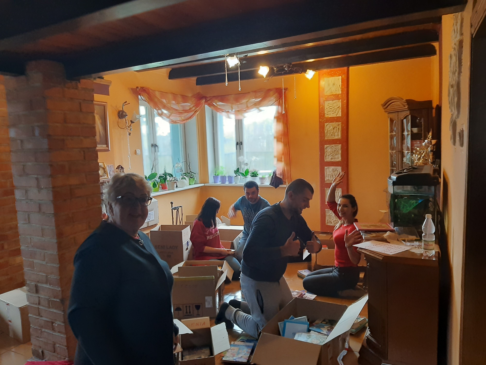

Cykruluj Książeczko
Akcja powstała z inspiracji epizodu jaki zdarzył się w Aptece Zdrowie w Żukowie. Kierowniczka apteki mając w domu remont musiała przejrzeć swoją biblioteczkę. Znalazła kilkanaście książek dziecięcych, które już jej nie będą potrzebne (jej najmłodsze dziecko zdaje w tym roku maturę). Zabrała te książki do apteki i położyła na stoliku dla dzieci. Gdy książka spodobała się jakiemuś dziecku zdarzało się, że pytano czy mogą sobie zabrać daną książkę.
Zainspirowało mnie to do stworzenia takich możliwości w innych punktach, gdzie przychodzą rodzice z dziećmi. Pomyślałem, że warto powiedzieć ludziom, że w aptece, banku, punkcie usługowym każdy właściciel może taką akcję przeprowadzić. Może powiedzieć pracownikom, że jeżeli mają zbędne książki dziecięce na tyle godne by ktoś mógł z przyjemnością z nich korzystać to niech przyniesie do firmy. Położy się je w jednym miejscu, odpowiednio oznakowanym i małe dzieci będą mogły wybrać najciekawszą dla siebie i zabrać ją do domu. Może spowoduje to większe zainteresowanie dziecka książką w jego życiu? Może dziecko, którego nie stać na książkę, będzie mogło z mamą poczytać w domu? Może dziecko czy to bogate, czy nie tak bardzo znajdzie sobie jeszcze jednego przyjaciela w życiu i tym przyjacielem będzie książka?
Wystarczy tylko o tym powiedzieć ludziom. Stworzyć logo akcji w postaci na przykład Ex librisu. Wówczas dowolna osoba w Polsce może wydrukować logo ze strony internetowej i praktycznie bez kosztów przeprowadzić akcję u siebie w swoim sklepie, aptece czy podobnym miejscu. Może przejrzeć swoją biblioteczkę, może zapytać współpracowników, może poprosić swoje dziecko by przeprowadziło zbiórkę książek w szkole. I akcja gotowa, i więcej dzieci ma dostęp do książek.
Ważną przy tym rzeczą jest by pamiętać, że książki muszą szanować dziecko. Muszą być zdatne do użytku, czyste, nie rozlatujące się. Muszą być również zajmujące, a sprawdzić to można przez okres karencji na stoliku. Jeżeli nie zainteresuje nikogo np. przez miesiąc to znaczy, że jedynym miejscem dla niej jest makulatura...
Wiem jednak, że książki na półkach, te odkładane, mają swoją wartość i warto również je przekazać innym. Warto tworzyć więzi człowiek – książka, a ta akcja pozwoli na robienie tego wcześniej.
Stanisław Kalicki - pomysłodawca akcji
Jakie są cele akcji?
Cyrkuluj książeczko ma następujące cele: 1. Dać dzieciom książki, wzbudzić ich zainteresowanie książką. Zrobić tak by dziecko już od najmłodszych lat zaczęło kochać książkę. Ktoś powiedział, że Książka nie czytana - umiera. 2. Nauczyć dzieci Organizacji i Zażądania akcją społeczną. Poprzez danie procedury postępowania jak zorganizować akcję ułatwić jej zorganizowanie. Dotyczy to każdego rodzaju akcji w szkole. Tu proszę o pomoc Was wszystkich. Prześlijcie nam na adres kontaktowy fundacji procesy organizacji akcji w punktach. Kto do kogo, w jakim czasie i co należy zrobić. Przedstawimy je na stronie by inni mogli zobaczyć jakie to proste. Dzięki zorganizowaniu akcji dziecko będzie nabierało umiejętności menadżerskich i w przyszłości może to procentować. Menadżer z sercem - takich ludzi nam potrzeba. Bo biznes można prowadzić czyniąc dobro. 3. Stworzyć nowy kanał dystrybucji książek - dla dzieci w wieku od 3-7 lat. Obecnie zbiera się książki dla szkół i bibliotek gdzie dzieci w tym wieku nie uczęszczają. Dopiero dostęp w sklepach i punktach usługowych pozwoli dzieciom i ich rodzicom zdobyć książkę bezpłatnie, która może zainteresować dziecko. Niekiedy będzie to jedyna zabawka na którą stać rodziców, ale głównie będzie to książka, którą wybrało sobie samo dziecko i tym bardziej może być nią zainteresowane. Dlatego jest to akcja dla dzieci bez względu na stan posiadania, a jedynie zależy od otwartości rodziców czy pozwolą dziecku wziąć książkę i pomogą jemu ją czytać? 4. Uzupełnić biblioteki szkół tak i wiejskich jak i tych gdzie jest to potrzebne oraz domów dziecka, a także szkół polskich na Litwie gdzie ich brakuje i wesprzeć działania Henryki Krzywonos-Strycharskiej, która ciągle stara się uzupełnić braki w podręczniki również w tych szkołach. .
Jak wygląda organizacja zbiórki?
Zbiórkę staramy się organizować cyklicznie wspólnie z wieloma centrami handlowymi. Dzięki wielkiemu sercu pracowników Auchan w Trójmieście oraz wielu szkół, które chętnie przeprowadzają akcję „Cyrkuluj Książeczko”, udaje nam się dotrzeć do zakurzonych półek wielu Polaków.
Co robimy z zebranymi książkami?
Zebrane książki trafiają do placówki fundacji i czekają na segregowanie. Gdy nadejdzie dzień segregacji, zjeżdżają się wolontariusze Fundacji „Już Pomagam” na całodzienne kategoryzowanie książek. Zapraszamy do dołączenia do grupy wolontariuszy fundacji - poznasz wspaniałych ludzi i posmakujesz pysznej drożdżówki Stasia, którą piecze na każde segregowanie książek.
Jak zostać wolontariuszem fundacji?
Mamy dobre wieści, nie mamy żadnych wymagań ani rozmów rekrutacyjnych. Jedyne co od Ciebie oczekujemy to szczerego uśmiechu i otwartego serca. Jedyne o co poprosimy, to o kontakt mailowy.
Gdzie wysyłamy zebrane książki?
Zebrane książki wysyłamy do szpitali, domów opieki społecznej, szkół oraz bibliotek, które wyrażą taką potrzebę. Docieramy do miejsc, o których mamy pewność, że książki zostaną zaopiekowane. Jeśli znasz takie miejsce, daj nam koniecznie znać. Może uda nam się tam dotrzeć w trakcie kolejnej akcji.
Czy mogę samemu zorganizwać akcję „Cyrkuluj Książeczko”?
Wystarczy wyznaczyć i oznaczyć logiem akcji miejsce w swojej firmie, gdzie dzieci w wieku od 3 do 7 lat będą mogły obejrzeć i wziąć (jeśli będą chciały) leżące tam książeczki. Ponadto warto też oznaczyć książeczki exlibrisem "Cyrkuluj książeczko" (ściągnij exlibris). Ważne jest, by wyłożone książeczki były w dobrym stanie, czyli takim w jakim sami byśmy chcieli by nasze dziecko je wzięło. Jeśli ktoś chce, to może się również pokusić o wyrobienie stempla z exlibrisem, by w ten klasyczny sposób oznaczać książki.

Czy mogę zorganizować akcję w swojej szkole?
Akcje „Cyrkuluj Książeczko” może przeprowadzić każdy, niezależnie od wieku w miejscu, który Wam przyjdzie Wam do głowy.To piękne obserwować jak dzieci poprzez inicjatywy od najmłodszych lat uczą się wartości, z którymi warto iść przez życie.
Jak powinno wyglądać miejsce akcji „Cyrkuluj Książeczko”?
Proponujemy by był to niski stolik i maksymalnie 10 książeczek na raz. Można włączyć w akcję swoich pracowników np. poprzez zachęcenie ich do przyniesienia niepotrzebnych już ich dzieciom (lub znajomym) książek.
Czy „Cyrkuluj Książeczko” ma patronat medialny?
Patronat medialny nad akcją sprawuje Radio Gdańsk, Dziennik Bałtycki oraz portal naszemiasto.pl
Mam duży zbiór książek. Czy mogę wysłać bezpośrednio do Was?
Jeśli posiadasz większą ilość książek, zapraszamy do kontaktu mailowego. Najprawdopodobniej poprosimy Cię o przesłanie ich pod adres fundacji niezależnie od tego czy i gdzie akcja „Cyrkuluj Książeczko” właśnie trwa.
Gdzie mogę śledzić, w którym miejscu obecnie zbierane są książki?
Staramy się na bieżąco informować o naszych działaniach przez kanał na facebooku oraz na stronie z aktualnościami. Tam te znajdą Państwo szczegółowe dane o przeprowadzonych akcjach „Cyrkuluj Książeczko”. Skład fundacji, to osoby pracujące, które na pracę fundacji przeznaczają swój czas wolny, dlatego prosimy o wyrozumiałość w terminowości dostarczania przez nas komunikatów. Jednakże zachęcamy do bezpośredniego kontaktu w celu przesłania książek do siedziby fundacji.
Podziel się doświadczeniem!
Jeśli chcesz pokazać jak wygląda Cyrkulująca Książeczka w Twojej firmie, to prześlij zdjęcie z opisem (wedle uznania) i nazwą firmy, a my je zamieścimy na naszej stronie interentowej. Zobacz jak akcję „Cyrkuluj Książeczko” przeprowadziła Apteka Dla Ciebie w C.H. Auchan na ulicy Szczęśliwej oraz Apteka Dla zdrowia w Gdyni na ulicy Działki Leśne.